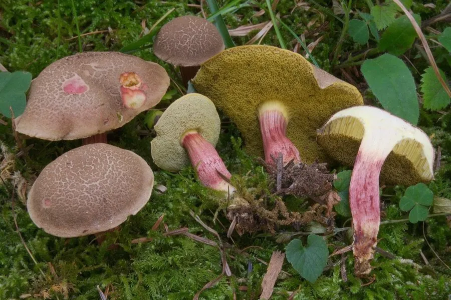

真菌 · 真菌界
红绒盖牛肝菌 Xerocomellus chrysenteron

牛肝菌科小型食用菌，菌盖褐橄榄色、老后裂纹露出红色菌肉，菌柄细长，夏秋生于阔叶林地上，个体较小。
- 分类
- 门担子菌门纲伞菌纲目牛肝菌目科牛肝菌科属绒盖牛肝菌属
- 栖息环境
- 阔叶林与混交林地上，与栎、榛等形成外生菌根
- 地理分布
- 北半球温带林地分布，中国华北、西南及欧洲、北美常见
- 保护级别
- 暂无评估；种群较稳定
物种志
红绒盖牛肝菌的菌盖直径 3–8 厘米，初期半球形，后平展，表面褐橄榄色至灰褐色，干燥后常开裂，裂纹处露出下方红色菌肉，边缘有时带暗红。菌肉淡黄，伤后微变蓝。菌管层淡黄至黄绿色，管口较大、多角形。菌柄长 4–10 厘米，直径 0.6–1.5 厘米，黄色，下部带红色，表面有细纵纹，无菌环。孢子印橄榄褐色。
红绒盖牛肝菌生于阔叶林或针阔混交林地上，与栎、榛等形成外生菌根，夏秋 7–10 月发生，常成群。它是牛肝菌中较常见的小型食用种，菌肉柔软、味道温和，可炒食或做汤，但必须煮熟。其菌盖开裂露出红色菌肉的特征颇具辨识度，但牛肝菌类鉴定困难，采食时仍需排除菌管红色、伤后剧烈变蓝、菌柄有网纹的有毒种类，并避免与酒同食。
形态与习性
- 菌盖直径 3–8 厘米，褐橄榄色，老后开裂露红
- 菌管淡黄至黄绿色，管口较大呈多角形
- 菌柄长 4–10 厘米，黄色带红，有细纵纹
- 孢子印橄榄褐色，孢子纺锤形
- 生境阔叶林地上，与栎、榛共生，夏秋成群
- 食用性菌肉柔软味温和，须煮熟，忌与酒同食
趣味知识
- 它的菌盖干燥后开裂，裂缝里露出红色菌肉，像干裂的红土，因此得名红绒盖。
- 红绒盖牛肝菌菌柄细长、没有菌环，与粗壮的牛肝菌属种类不同。
- 牛肝菌类伤后变蓝并不都代表有毒，但变色剧烈的种类应谨慎对待。
- 小型绒盖牛肝菌易碎、不耐储运，产地多现采现吃。